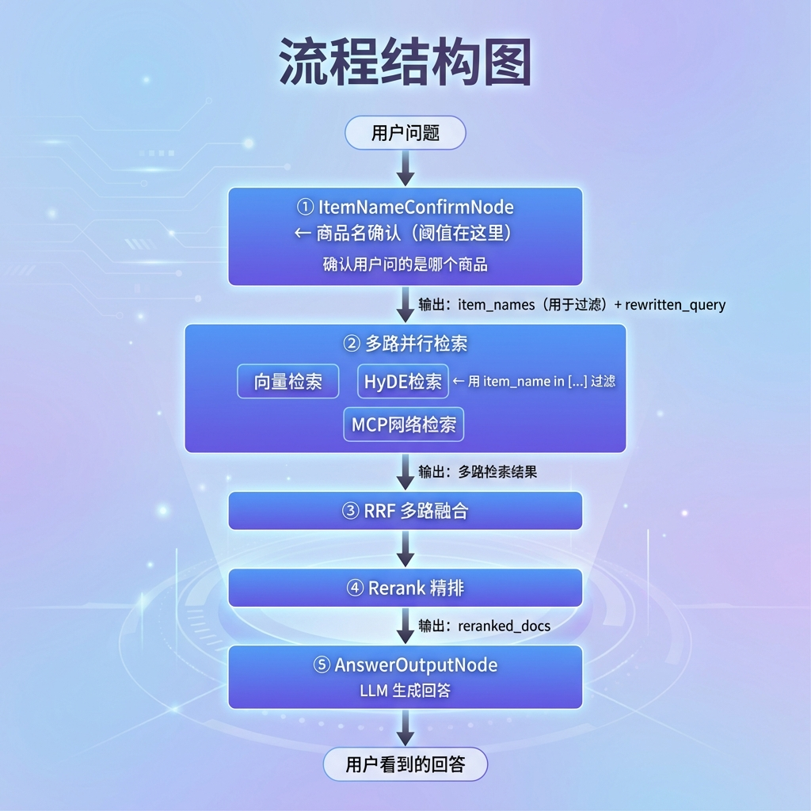
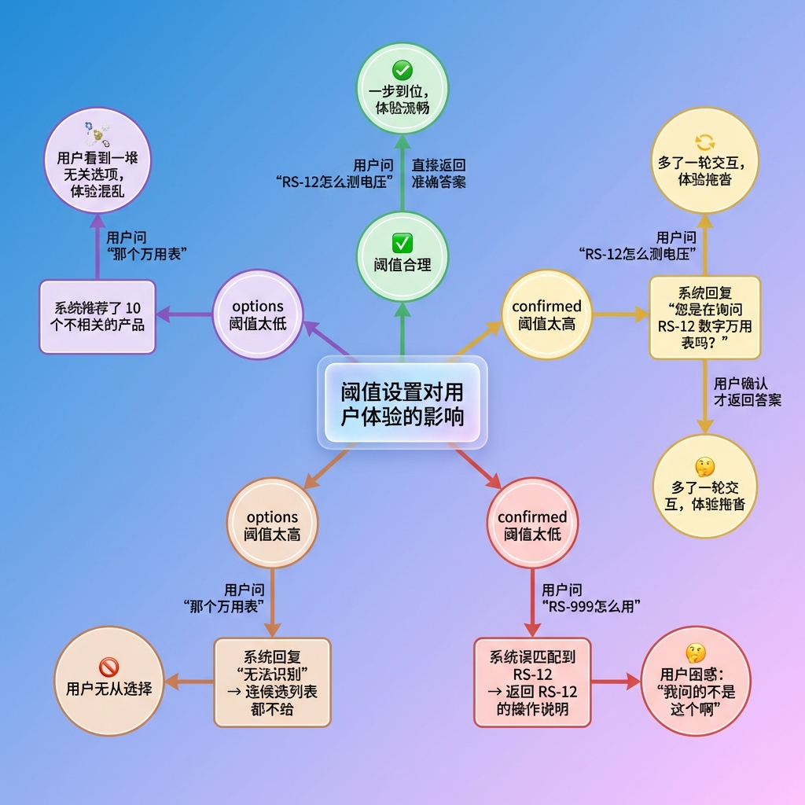
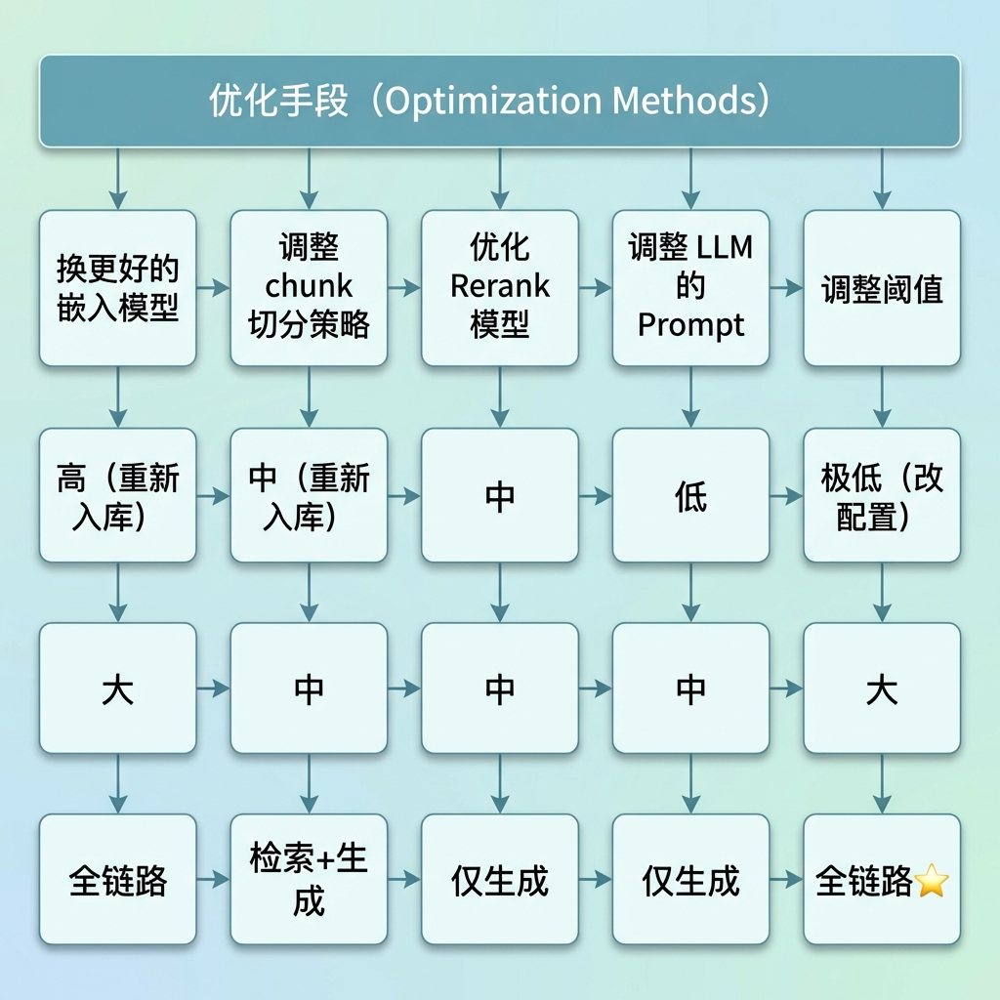
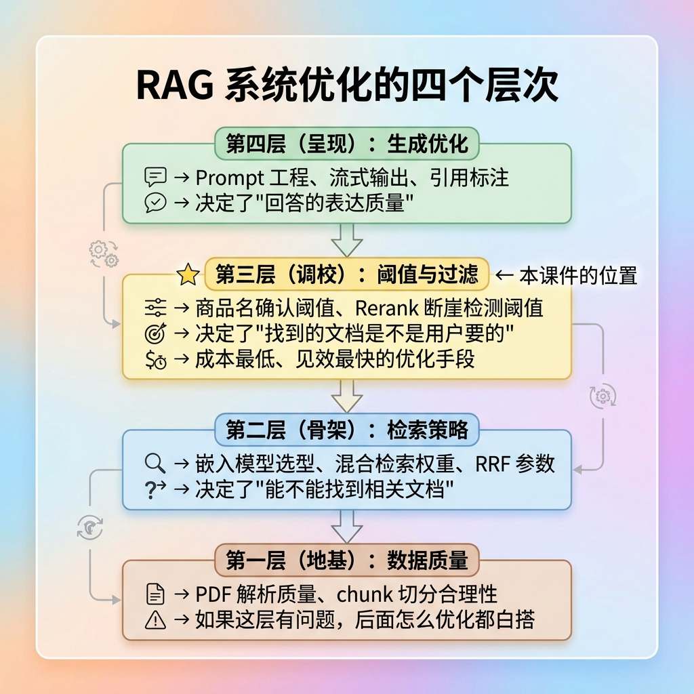
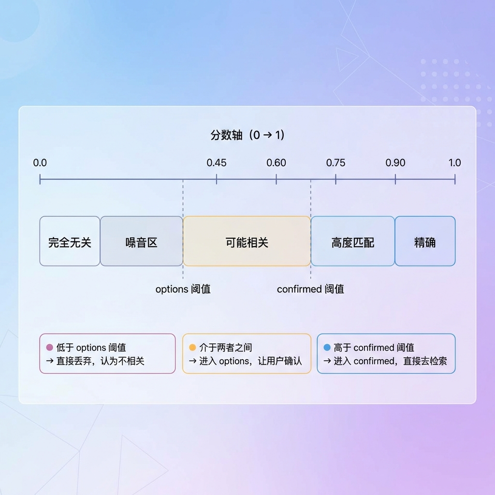
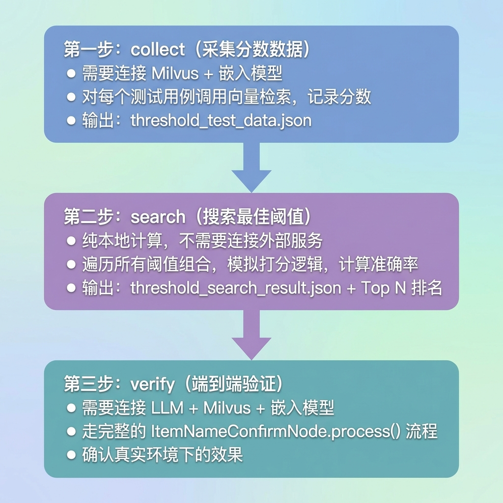
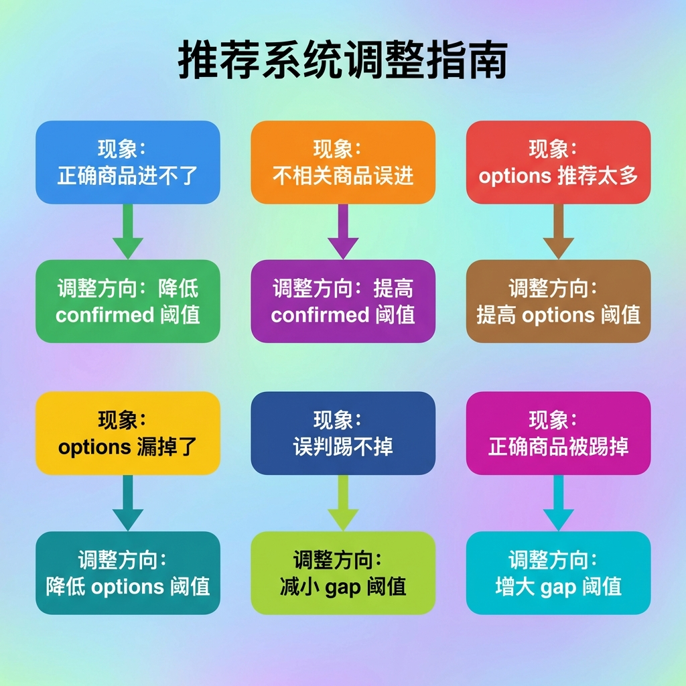

RAG项目（查询）—— 商品名确认阈值微调
1. 任务目标
在智库的查询流程中，ItemNameConfirmNode 是第一个节点，负责在检索知识库之前确认用户到底在问哪个商品。它的核心逻辑依赖三个阈值参数来做决策：
| Text Only |
|---|
| confirmed 阈值（当前 0.70）：分数超过此值 → 确定是这个商品，直接检索
options 阈值 （当前 0.60）：分数超过此值 → 可能是这个商品，让用户确认
gap 阈值 （当前 0.15）：confirmed 中多个商品的分数差 → 超过此值的踢掉（防误判）
|
本文档的目标是：通过数据驱动的方式，找到这三个阈值的最优组合，而不是凭经验拍脑袋。
完成本文档后，你将掌握：
- 阈值微调在 RAG 系统中的定位和影响范围
- 为什么不能直接拍脑袋定阈值
- 阈值测试工具的三步工作流（采集 → 搜索 → 验证）
- 如何设计有效的测试用例
- 如何解读测试结果并修正用例
- 如何将最佳阈值应用到生产环境
2. 从 RAG 全局视角看阈值微调
2.1 查询流程的完整链路
在智库的 RAG 查询流程中，用户的一个问题要经过多个环节才能变成最终的回答：

ItemNameConfirmNode 是整条链路的第一个环节，它的输出直接决定了后续所有环节的行为。阈值调得好不好，影响的不是一个节点，而是整条链路。
2.2 阈值如何影响 RAG 的每一层
第一层影响：检索范围（向量检索 + HyDE 检索）
确认了商品名后，下游的向量检索和 HyDE 检索都会加上 item_name in [...] 的过滤条件。阈值直接决定了这个过滤条件的内容：
| Text Only |
|---|
| 阈值太高（如 0.85）→ 大量正确商品进不了 confirmed
→ item_names 为空或进 options
→ 用户被拦截，要求确认
→ 体验差：明明说了"RS-12万用表"还要再确认一次
阈值太低（如 0.55）→ 不相关的商品也进了 confirmed
→ item_names 包含错误的商品名
→ 向量检索用错误的 item_name 过滤
→ 检索到的全是不相关文档
→ RRF、Rerank 再怎么排序也救不回来
→ LLM 基于错误的上下文生成错误的回答
|
第二层影响：检索质量（RRF + Rerank）
| Text Only |
|---|
| 正确的 item_name → 检索范围精准 → 命中的 chunk 相关度高
→ RRF 融合时高分 chunk 占主导
→ Rerank 精排后 Top K 全是高质量文档
→ LLM 生成高质量回答
错误的 item_name → 检索范围偏离 → 命中的 chunk 不相关
→ RRF 融合时全是低分噪音
→ Rerank 精排后 Top K 质量也差（垃圾进垃圾出）
→ LLM 基于不相关内容"编"出看似合理但实际错误的回答
|
第三层影响：用户体验

2.3 阈值微调的本质：在"精准"和"召回"之间找平衡
从信息检索的角度，阈值微调本质上是在调整 Precision（精准率） 和 Recall（召回率） 之间的平衡：
| Text Only |
|---|
| confirmed 阈值调高 → Precision ↑ Recall ↓
精准率提高：进入 confirmed 的都是对的
召回率降低：很多正确的商品过不了阈值，被漏掉
confirmed 阈值调低 → Precision ↓ Recall ↑
精准率降低：不相关的商品也混进来了
召回率提高：正确的商品基本都能通过
最佳阈值 → 在当前数据分布下，Precision 和 Recall 的最优平衡点
|
这就是为什么阈值不能拍脑袋定——最优平衡点取决于你的数据分布，不同的嵌入模型、不同的商品集合、不同的用户提问方式，平衡点完全不同。
2.4 阈值是 RAG 系统中"性价比最高"的优化点

2.5 阈值微调在 RAG 优化层次中的位置

阈值微调属于第三层，是在第一层和第二层已经搭好的基础上做精细化调校。它不能解决"数据质量差"或"嵌入模型不行"的根本问题，但它能在现有条件下把效果调到最优。
3. 核心概念
3.1 三个阈值的业务含义
用户问了一个问题后，LLM 会提取出商品名关键词，然后拿去 Milvus 的 kb_item_names 集合做向量检索，每个匹配结果都有一个相似度分数（0\~1）。三个阈值决定了这些分数如何被"翻译"成业务决策：

3.2 gap 阈值的作用
当 confirmed 列表中有多个商品时，gap 阈值用来踢掉"蹭进来"的误判商品：
| Text Only |
|---|
| 场景：用户问"RS-12万用表怎么测电阻"
LLM 提取出：["RS-12万用表", "万用表测量电阻"]
如果匹配到不同商品：
"RS-12万用表" → RS-12 数字万用表 score=0.78 ← 基准
"万用表测量电阻" → hak180使用说明书 score=0.71 ← 误判
gap = 0.78 - 0.71 = 0.07 < 0.08 → 不踢掉（gap 阈值太小）
gap = 0.78 - 0.71 = 0.07 < 0.15 → 踢掉（gap 阈值合理）
|
3.3 为什么不能拍脑袋定阈值
以我们项目的实际数据为例：
| Text Only |
|---|
| 分数分布概览：
[0.9, 1.0) 0 个 ← 没有一个超过 0.9
[0.8, 0.9) 0 个 ← 也没有超过 0.8
[0.7, 0.8) 17 个 █████████ ← 正确匹配集中在这里
[0.6, 0.7) 8 个 ████ ← 模糊区
[0.5, 0.6) 0 个 ← 天然断裂带
[0.0, 0.5) 50 个 █████████ ← 噪音区
最高分: 0.7861, 最低分: 0.3286
|
如果不看数据，直接把 confirmed 阈值设成 0.85，那所有商品都匹配不上，系统永远在让用户确认。阈值必须根据实际分数分布来定。
3.4 三个阈值之间的约束关系
| Text Only |
|---|
| 必须满足: options 阈值 < confirmed 阈值
间距不能太小: confirmed - options >= 0.05
gap 阈值的范围: 通常在 0.05 ~ 0.25 之间
（太小：正常的商品也被踢掉）
（太大：误判的商品踢不掉，形同虚设）
|
4. 测试工具架构
4.1 整体三步走流程

4.2 文件结构
| Text Only |
|---|
| knowledge/
test/
query/
test_case.py # 测试用例定义（TEST_CASES 列表）
test_threshold.py # 阈值测试工具（ThresholdTester 类）
threshold_test_data.json # collect 输出的分数数据
threshold_search_result.json # search 输出的最佳参数
|
4.3 核心类设计
| Text Only |
|---|
1
2
3
4
5
6
7
8
9
10
11
12
13 | ThresholdConfig（配置类）
├── data_path / result_path / collection_name
├── confirm_range / options_range / gap_range # 搜索范围
└── top_n # 显示 Top N
ThresholdTester（测试器类）
├── collect(test_cases) # 第一步：采集
├── search() # 第二步：搜索
├── verify(test_cases) # 第三步：验证
├── _simulate_align() # 模拟评分对齐逻辑
├── _simulate_filter() # 模拟分数差过滤逻辑
├── _check_result() # 判断结果正确性
└── _evaluate_thresholds() # 用指定阈值评估所有用例
|
5. 测试用例设计
5.1 用例结构
| Python |
|---|
| {
"query": "RS-12数字万用表怎么测电压？", # 用户原始问题
"llm_extract": ["RS-12数字万用表"], # 模拟 LLM 提取的商品名
"expected_confirmed": ["RS-12 数字万用表"], # 期望进入 confirmed
"expected_options": [], # 期望进入 options
"description": "精确-RS-12测电压"
}
|
注意：expected 中的商品名必须和 Milvus 中实际存储的 item_name 完全一致。
5.2 用例分类覆盖表
| Text Only |
|---|
1
2
3
4
5
6
7
8
9
10
11
12
13
14
15
16
17
18
19
20
21
22
23
24
25
26
27
28
29
30
31
32 | ┌──────────────────────┬────────┬─────────────────────────────────────────┬─────────────────┐
│ 场景类别 │ 数量 │ 预期效果 │ 示例 │
├──────────────────────┼────────┼─────────────────────────────────────────┼─────────────────┤
│ 精确单商品查询 │ 4条 │ → confirmed 有值，options 为空 │ RS-12测电压 │
│ （单手册商品 RS-12） │ │ → 直接确认，无需用户选择 │ RS-12测电阻 │
│ │ │ │ RS12简称(无横杠)│
│ │ │ │ 名称顺序调换 │
├──────────────────────┼────────┼─────────────────────────────────────────┼─────────────────┤
│ 精确指定具体手册 │ 1条 │ → confirmed 有值，options 为空 │ hak180安全事项 │
│ （多手册+语义明确） │ │ → "安全注意事项"明确指向安全手册 │ │
├──────────────────────┼────────┼─────────────────────────────────────────┼─────────────────┤
│ 同产品多手册 │ 3条 │ → confirmed 为空，options 有值(2个) │ hak180怎么使用 │
│ （未指定哪本） │ │ → 让用户选择：使用说明书/安全手册 │ hak180简称 │
│ │ │ │ 仅"hak180"型号 │
├──────────────────────┼────────┼─────────────────────────────────────────┼─────────────────┤
│ 多商品同时查询 │ 1条 │ → confirmed 有值 + options 有值 │ RS-12和hak180 │
│ │ │ → RS-12进confirmed，hak180进options │ 对比 │
├──────────────────────┼────────┼─────────────────────────────────────────┼─────────────────┤
│ 模糊/描述性查询 │ 2条 │ → confirmed 为空，options 有值 │ "RS型号万用表" │
│ │ │ → 描述模糊，给出候选让用户确认 │ "hak开头安全" │
├──────────────────────┼────────┼─────────────────────────────────────────┼─────────────────┤
│ 无关查询 │ 2条 │ → confirmed 和 options 都为空 │ "店里有什么" │
│ （无具体商品） │ │ → LLM无法提取商品名，触发"无法识别" │ "如何选万用表" │
├──────────────────────┼────────┼─────────────────────────────────────────┼─────────────────┤
│ 不存在的商品 │ 2条 │ → confirmed 和 options 都为空 │ RS-999(不存在) │
│ │ │ → 向量检索分数过低，无法匹配 │ abc123(不存在) │
├──────────────────────┼────────┼─────────────────────────────────────────┼─────────────────┤
│ 边界情况 │ 1条 │ → confirmed 为空，options 有值 │ 仅"RS-12"型号 │
│ （单手册商品仅型号） │ │ → 信息不足，让用户确认是不是这个商品 │ │
└──────────────────────┴────────┴─────────────────────────────────────────┴─────────────────┘
总计：15 条测试用例
|
四种预期效果分布：
| Text Only |
|---|
| ┌───────────────────────────────────────────────────────────────────┐
│ 预期效果 │ 用例数 │ 占比 │ 业务含义 │
├───────────────────────────────────────────────────────────────────┤
│ confirmed 有值 + options 为空 │ 5条 │ 33% │ 直接确认检索 │
│ confirmed 为空 + options 有值 │ 6条 │ 40% │ 让用户选择 │
│ confirmed 有值 + options 有值 │ 1条 │ 7% │ 混合场景 │
│ 两者都为空 │ 4条 │ 27% │ 无法识别 │
└───────────────────────────────────────────────────────────────────┘
|
覆盖的商品及其手册情况：
| 商品 |
手册数量 |
测试覆盖场景 |
| RS-12 数字万用表 |
1本 |
精确查询、简称、顺序调换、仅型号边界 |
| hak180使用说明书 |
2本 |
未指定→进options |
| hak180产品安全手册 |
2本 |
指定安全→进confirmed，未指定→进options |
| 不存在商品 |
- |
RS-999、abc123（验证不误匹配） |
5.3 同产品多手册的处理原则
| Text Only |
|---|
| 原则：用户问得不够精确 → 让用户选择，不替用户猜
"hak180怎么用" → options（不知道该去哪本手册找）
"hak180的安全注意事项" → confirmed（语义明确指向安全手册）
|
6. 实操步骤
6.1 第一步：采集分数数据
| Bash |
|---|
| python -m knowledge.test.query.test_threshold collect
|
关键观察点：正确匹配集中在哪个区间、噪音在哪、有没有断裂带、最高分是多少。
6.2 第二步：搜索最佳阈值
| Bash |
|---|
| python -m knowledge.test.query.test_threshold search
|
解读 Top 10：如果准确率都一样说明 gap 影响不大；如果低于 70% 先检查用例是否有问题。
6.3 分析失败用例
| Text Only |
|---|
| ┌────────────────────────┬──────────────────────────────────────┐
│ 失败原因 │ 对策 │
├────────────────────────┼──────────────────────────────────────┤
│ expected 和实际不一致 │ 跑 collect 看实际值，修正用例 │
│ 分数卡在阈值边界 │ 调整期望（改为进 options） │
│ 嵌入模型区分度不够 │ 标记为已知问题，增加商品稀释 │
└────────────────────────┴──────────────────────────────────────┘
|
6.4 第三步：端到端验证
| Bash |
|---|
| python -m knowledge.test.query.test_threshold verify
|
注意：verify 用真实 LLM 提取，结果可能和 search（手动 llm_extract）略有不同。
7. 穷举搜索原理
7.1 搜索空间
| Python |
|---|
| confirm_range = [0.60, 0.65, 0.70, 0.75, 0.80, 0.85] # 6 个
options_range = [0.45, 0.50, 0.55, 0.60, 0.65] # 5 个
gap_range = [0.08, 0.10, 0.12, 0.15, 0.18, 0.20, 0.25] # 7 个
# 跳过 options >= confirm 后约 189 种组合，毫秒级完成
|
7.2 正确性判断规则
- confirmed：期望的每一个都必须在实际中（不允许少，允许多）
- confirmed：期望为空但实际不为空 → 算错
- options：只在期望非空时检查（允许多出来）
8. 生产环境的阈值管理
8.1 配置化改造
| Python |
|---|
| # config.py — 从配置读取，不再硬编码
class QueryConfig:
item_name_confirm_threshold: float = 0.75
item_name_options_threshold: float = 0.45
item_name_gap_threshold: float = 0.08
|
8.2 调整方向参考

8.3 持续优化循环
| Text Only |
|---|
| 上线运行 → 收集日志 → 发现问题 → 补充测试用例
→ 重新跑 collect + search → 更新配置上线 → 回到第一步
|
9. 本次微调总结
9.1 迭代过程
| Text Only |
|---|
| 初始: confirm=0.70, options=0.60, gap=0.15 → 拍脑袋
第一轮: 准确率 52.9% → 用例有矛盾
第二轮: 准确率 81.2% → 最终结果
|
9.2 最终阈值
| Text Only |
|---|
| confirm: 0.75（↑ 从 0.70，减少误匹配）
options: 0.45（↓ 从 0.60，利用断裂带）
gap: 0.08（↓ 从 0.15，更严格过滤）
|
9.3 已知局限
- RS12（无横杠）score=0.7057 < 0.75，嵌入模型对符号敏感
- RS-999 误匹配 RS-12，商品太少导致"向量聚集"
- 测试用例仅 16 条，后续需补充更多商品重新调参
10. 命令速查
| Bash |
|---|
| python -m knowledge.test.query.test_threshold collect # 采集
python -m knowledge.test.query.test_threshold search # 搜索
python -m knowledge.test.query.test_threshold search --top 20 # Top 20
python -m knowledge.test.query.test_threshold verify # 验证
|